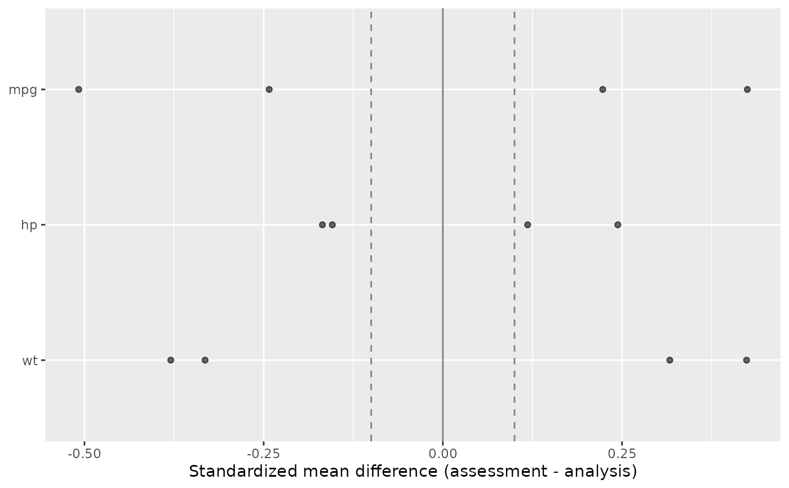
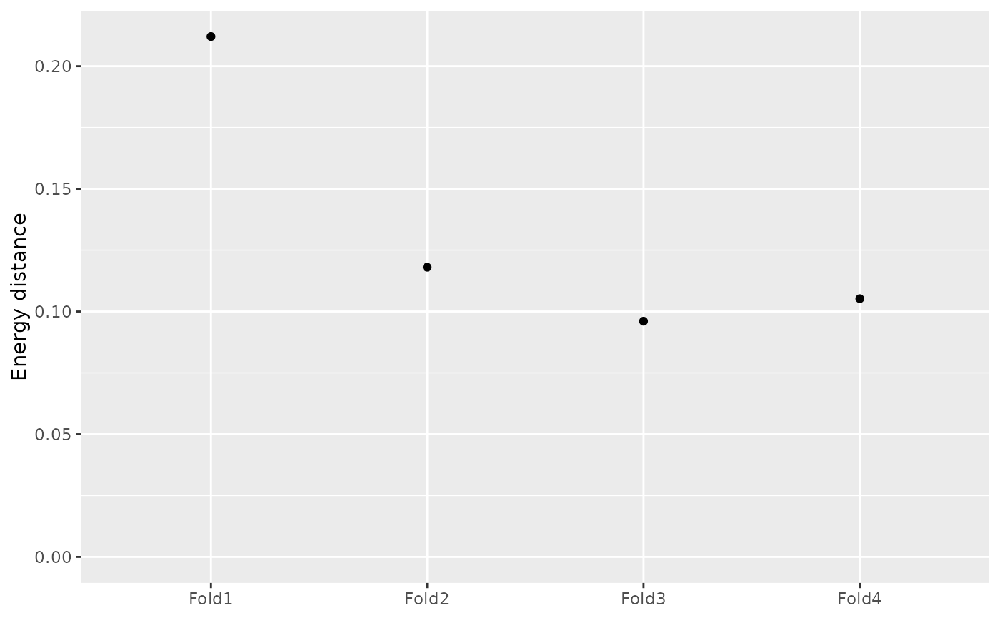

Plot the output of balance_check(). type = "smd" shows the
standardized mean difference of each variable in each split, with dashed
lines at -0.1 and 0.1. For a three-way split, the validation and testing
sets have different shapes. type = "energy" shows the energy distance of
each split.
Usage
# S3 method for class 'balance_check'
autoplot(object, type = c("smd", "energy"), ...)Examples
library(ggplot2)
set.seed(1)
folds <- balanced_vfold_cv(mtcars, v = 4, balance = c(mpg, hp, wt))
autoplot(balance_check(folds))

autoplot(balance_check(folds), type = "energy")
